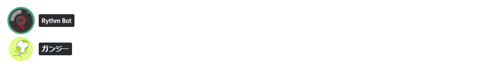

Discord StreamKit Overlay Sample
■Discord StreamKit Overlay
https://streamkit.discordapp.com/overlay
ストリーミングソフトウェア『OBS』でDiscordのボイスチャットオーバーレイを表示する際のカスタムCSSの例を以下に示します。
Author: @GungeeSpla
解説
ボイスウィジェットのHTMLは次のようになっています。
参考
■DISCORDで喋ってる人を分かり易くするカスタムCSS
https://manten-do.net/archives/273